来源：https://yemahuyou.feishu.cn/docx/NQEYdXPWyoohmrxtaV2c4zQTnxh
YouTube官方api调用和selenium区别：
使用官方的api，首先我们需要配置必要的API密钥，我们需要一个YouTube Data API密钥才能获取数据。获取步骤如下：
如下图所示：
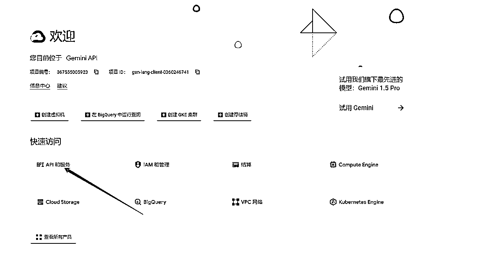
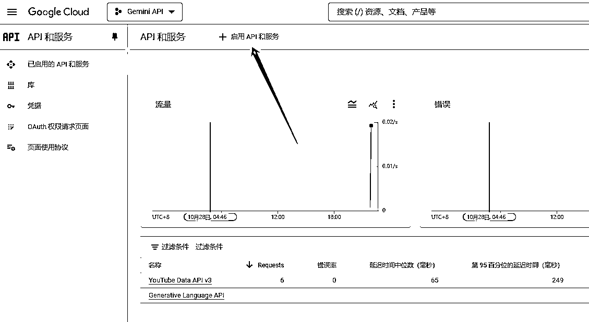
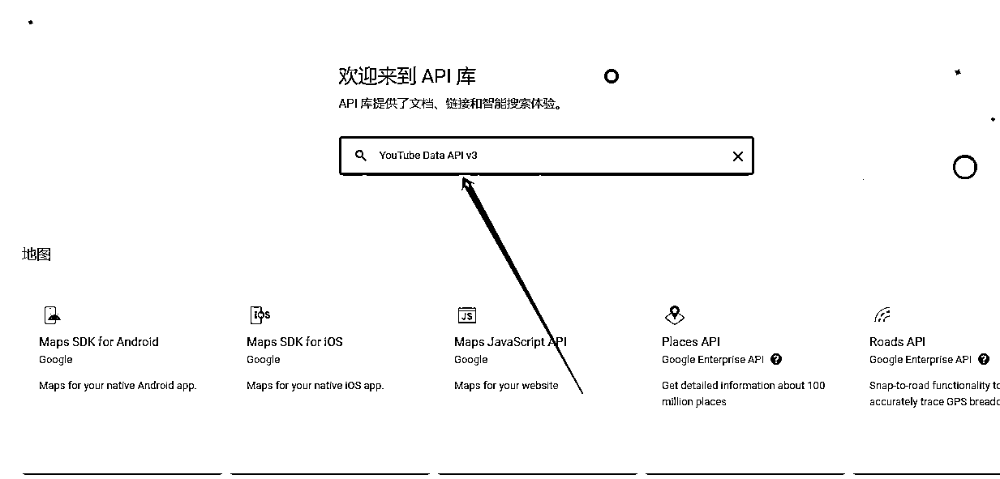
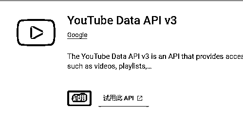
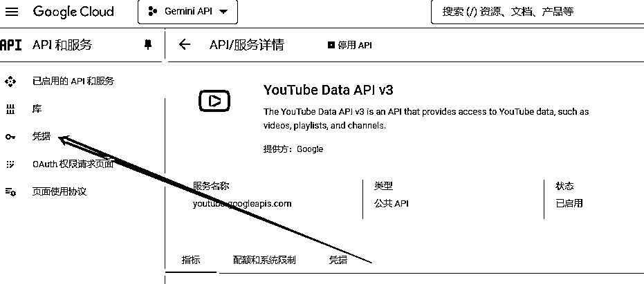
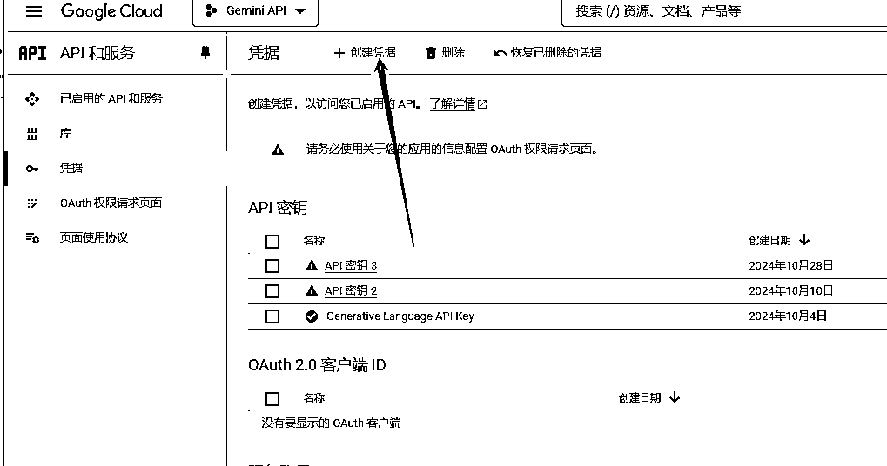
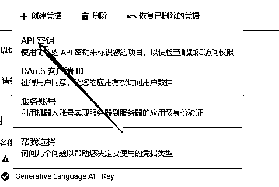
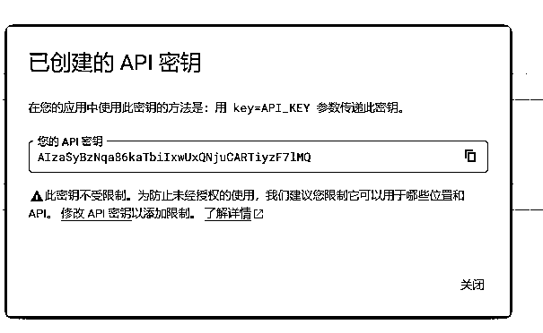
得到了密钥就是操作api的关键，调用api的这一步总离不开密钥；
后面如何调用，就要去参考官方api文档:
https://developers.google.com/youtube/v3/docs?hl=zh-cn
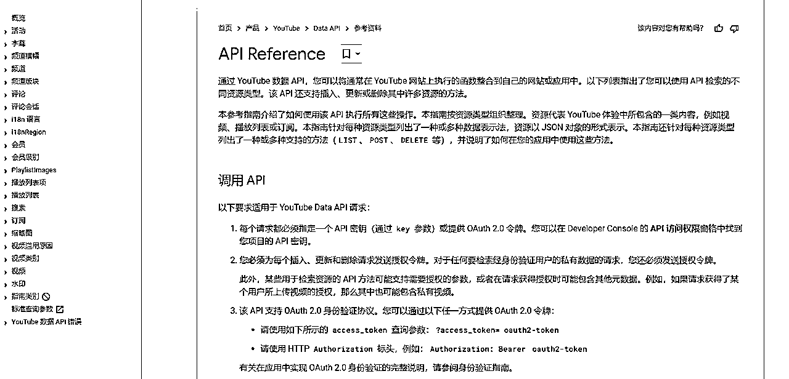
看起来很繁琐对吧？功能太多，不知道那些是我们想用得到的，也不知道要如何使用，简单，问gpt问Claude啊，把你觉得类似的可以用得到的功能，直接复制给gpt或者Claude，让它帮你完善，完全不需要你动笔，只需要反复跟AI交互修复BUG即可。
来看下调用的示例，它的功能是使用YouTube Data API来获取特定YouTube频道视频信息的Python脚本。
import os
import requests
import pandas as pd
from tkinter import Tk, filedialog
from requests.adapters import HTTPAdapter
from requests.packages.urllib3.util.retry import Retry
# 设置全局 HTTP 代理（如果需要）
os.environ['HTTP_PROXY'] = 'http://127.0.0.1:10809'
os.environ['HTTPS_PROXY'] = 'http://127.0.0.1:10809'
# 配置 API 密钥
API_KEY = '' # 替换为您的 API Key
# 定义请求会话，增加重试机制
session = requests.Session()
retries = Retry(total=5, backoff_factor=1, status_forcelist=[500, 502, 503, 504])
session.mount('https://', HTTPAdapter(max_retries=retries))
# 定义函数：通过频道链接获取实际的频道 ID 和名称
def get_channel_info_from_link(channel_link):
"""解析频道链接并获取实际的频道 ID 和名称"""
if '@' in channel_link:
custom_name = channel_link.split('@')[-1]
search_url = f"https://www.googleapis.com/youtube/v3/search?part=snippet&type=channel&q={custom_name}&key={API_KEY}"
response = session.get(search_url)
if response.status_code == 200:
data = response.json()
if 'items' in data and len(data['items']) > 0:
channel_id = data['items'][0]['snippet']['channelId']
channel_title = data['items'][0]['snippet']['title']
return channel_id, channel_title
elif 'channel/' in channel_link:
channel_id = channel_link.split('channel/')[-1]
return channel_id, None # 需要通过 channels.list 获取名称
return None, None
# 定义函数：通过频道 ID 获取上传视频播放列表 ID
def get_uploads_playlist_id(channel_id):
"""通过频道 ID 获取上传视频的播放列表 ID"""
url = f"https://www.googleapis.com/youtube/v3/channels?part=contentDetails&id={channel_id}&key={API_KEY}"
response = session.get(url)
if response.status_code == 200:
data = response.json()
if 'items' in data and len(data['items']) > 0:
return data['items'][0]['contentDetails']['relatedPlaylists']['uploads']
return None
# 定义函数：通过播放列表 ID 获取视频 ID 列表
def get_video_ids_from_playlist(playlist_id):
"""获取频道上传视频播放列表中的所有视频 ID"""
video_ids = []
url = f"https://www.googleapis.com/youtube/v3/playlistItems?part=snippet&playlistId={playlist_id}&maxResults=50&key={API_KEY}"
while url:
response = session.get(url)
if response.status_code == 200:
data = response.json()
for item in data['items']:
video_ids.append(item['snippet']['resourceId']['videoId'])
url = data.get('nextPageToken')
if url:
url = f"https://www.googleapis.com/youtube/v3/playlistItems?part=snippet&playlistId={playlist_id}&maxResults=50&pageToken={url}&key={API_KEY}"
else:
url = None
else:
break
return video_ids
# 定义函数：通过视频 ID 获取视频详细信息（标题、播放量、发布时间等）
def get_video_details(video_ids):
"""通过视频 ID 获取视频的详细信息"""
video_details = []
for i in range(0, len(video_ids), 50): # 分批次处理，最多50个ID一次
ids = ','.join(video_ids[i:i+50])
url = f"https://www.googleapis.com/youtube/v3/videos?part=snippet,statistics&id={ids}&key={API_KEY}"
response = session.get(url)
if response.status_code == 200:
data = response.json()
for video in data['items']:
title = video['snippet']['title']
publish_time = video['snippet']['publishedAt']
video_id = video['id']
video_link = f"https://www.youtube.com/watch?v={video_id}"
views = video['statistics'].get('viewCount', '0')
# 将发布时间转换为年-月-日格式
publish_date = publish_time.split("T")[0] # 获取日期部分
video_details.append([title, publish_date, video_link, views]) # 注意这里只添加所需列
return video_details
# 主函数：读取 Excel 表格并获取各个频道的视频信息
def main():
# 选择 Excel 文件
print("请选择包含频道链接的 Excel 文件：")
Tk().withdraw() # 隐藏 Tkinter 主窗口
file_path = filedialog.askopenfilename(filetypes=[("Excel files", "*.xlsx")])
if not file_path:
print("未选择文件，程序退出。")
return
# 读取 Excel 文件中的频道链接
input_df = pd.read_excel(file_path)
channel_links = input_df.iloc[:, 0].tolist() # 假设链接在第一列
all_videos_data = []
# 遍历每个频道链接
for channel_link in channel_links:
print(f"正在处理频道：{channel_link}")
# 获取频道 ID 和名称
channel_id, channel_title = get_channel_info_from_link(channel_link)
if not channel_id:
print(f"无法解析频道链接：{channel_link}")
continue
# 获取频道上传视频播放列表 ID
uploads_playlist_id = get_uploads_playlist_id(channel_id)
if not uploads_playlist_id:
print(f"未找到频道（ID: {channel_id}）的上传视频播放列表。")
continue
# 获取所有视频 ID
video_ids = get_video_ids_from_playlist(uploads_playlist_id)
# 获取视频详细信息
video_details = get_video_details(video_ids)
# 将每个视频添加到总数据中，并附上频道名称
for video in video_details:
video.append(channel_title) # 添加频道名称
all_videos_data.append(video)
# 将所有数据保存到新的 Excel 文件中
output_df = pd.DataFrame(all_videos_data, columns=["标题", "发布时间", "视频链接", "播放量", "频道名称"])
output_file_path = file_path.replace(".xlsx", "_视频详情.xlsx")
output_df.to_excel(output_file_path, index=False)
print(f"所有频道的视频数据已保存到：{output_file_path}")
if __name__ == "__main__":
main()
获得 API 密钥后，我们开始编写主要代码。这个脚本主要分为5个步骤来获取数据：
这里我用到了设置全局 HTTP 代理，因为出海需要一些魔法，所以在这块儿上，我直接用v2rayn链接节点，然后在代码上调用本地端口，来实现访问外面的功能。
# 设置全局 HTTP 代理（如果需要）
os.environ['HTTP_PROXY'] = 'http://127.0.0.1:10809'
os.environ['HTTPS_PROXY'] = 'http://127.0.0.1:10809'
search_url = f"https://www.googleapis.com/youtube/v3/search?part=snippet&type=channel&q={CUSTOM_NAME}&key={API_KEY}"
这一步的目的是将用户名（比如 @hublotbaggins）转换为YouTube的频道ID。因为YouTube的API需要使用频道ID来获取具体信息。
channel_url = f"https://www.googleapis.com/youtube/v3/channels?part=contentDetails&id={CHANNEL_ID}&key={API_KEY}"
获取到频道ID后，我们需要找到这个频道的'上传播放列表'。
playlist_url = f"https://www.googleapis.com/youtube/v3/playlistItems?part=snippet&playlistId={uploads_playlist_id}&maxResults=50&key={API_KEY}"
有了播放列表ID，我们就能获取所有视频的ID。
videos_url = f"https://www.googleapis.com/youtube/v3/videos?part=snippet,statistics&id={video_ids_str}&key={API_KEY}"
最后一步，我们用这些视频ID来获取每个视频的具体信息：
pip install requests pip install requests pandas openpyxl
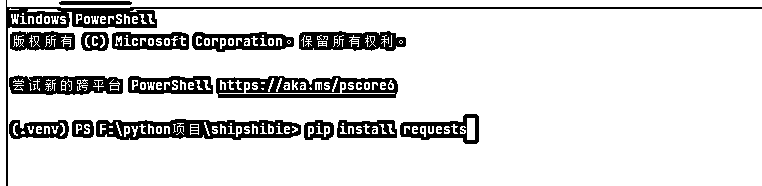
配置代理（如果你在国内）：
API_KEY = '你的API密钥' # 替换这里
创建一个Excel文件(例如 channels.xlsx)
在第一列放入要采集的YouTube频道链接
格式可以是：
Excel文件示例：
频道链接
@channel1
@channel2
channel/UC123456
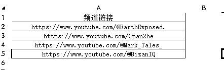
输出文件会包含这些列：
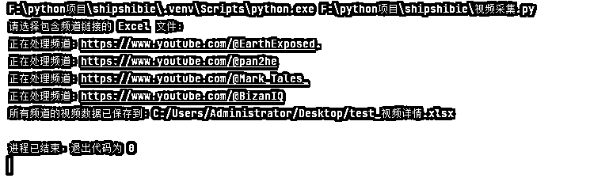
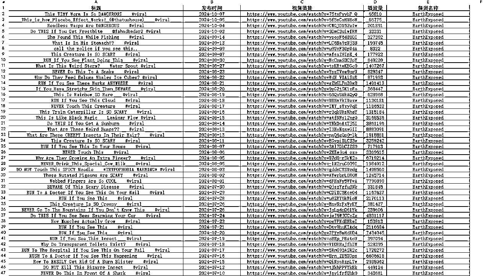
以上就是YouTube api调用的细节；
为了追求爆过的内容还会再爆原则，我会做一下数据清洗，保留百万以上的视频，方便洗稿二创。
import pandas as pd
from tkinter import Tk
from tkinter.filedialog import askopenfilename
import os
# 使用 tkinter 打开文件对话框选择文件
def select_excel_file():
Tk().withdraw() # 隐藏根窗口
file_path = askopenfilename(title="选择 Excel 文件", filetypes=[("Excel files", "*.xlsx;*.xls")])
return file_path
# 读取并处理 Excel 文件
def process_excel(file_path):
# 读取 Excel 文件到 DataFrame
df = pd.read_excel(file_path)
# 将“播放量”转换为数字类型
df['播放量'] = pd.to_numeric(df['播放量'], errors='coerce')
# 将“发布时间”转换为日期类型，并去掉时间部分只保留日期
df['发布时间'] = pd.to_datetime(df['发布时间'], errors='coerce').dt.date
# 筛选播放量大于 1000000 的数据
df_filtered = df[df['播放量'] > 1000000]
# 按播放量降序排列
df_sorted_by_views = df_filtered.sort_values(by='播放量', ascending=False)
# 然后按发布时间从新到旧排序
df_sorted_by_date = df_sorted_by_views.sort_values(by='发布时间', ascending=False)
return df_sorted_by_date
# 主函数
if __name__ == "__main__":
# 选择 Excel 文件
file_path = select_excel_file()
if file_path:
# 处理并获取排序后的数据
sorted_df = process_excel(file_path)
# 获取原始文件的目录
directory = os.path.dirname(file_path)
# 设置输出文件的路径，保存在原始文件相同的目录下
output_file = os.path.join(directory, "sorted_output.xlsx")
# 保存排序后的数据到新的 Excel 文件
sorted_df.to_excel(output_file, index=False)
print(f"已将排序结果保存到 {output_file} 文件。")
else:
print("未选择任何文件。")
import pandas as pd
from selenium import webdriver
from selenium.webdriver.common.by import By
import time
from tkinter import Tk
from tkinter.filedialog import askopenfilename
def scroll_to_bottom(driver):
"""滚动页面直到没有更多新的视频加载"""
last_height = driver.execute_script("return document.documentElement.scrollHeight")
while True:
# 向下滚动页面
driver.execute_script("window.scrollTo(0, document.documentElement.scrollHeight);")
time.sleep(2) # 等待页面加载
# 获取当前页面的新高度
new_height = driver.execute_script("return document.documentElement.scrollHeight")
# 如果新高度等于上次的高度，说明没有更多内容加载，停止滚动
if new_height == last_height:
break
last_height = new_height
def extract_video_data(driver, channel_url):
"""提取当前页面视频的标题、播放量和链接，并添加博主频道链接"""
video_elements = driver.find_elements(By.XPATH, "//ytd-rich-item-renderer") # 找到所有视频元素
video_data = []
# 遍历每个视频元素，分别提取标题、播放量和链接
for video in video_elements:
try:
title_element = video.find_element(By.XPATH, ".//h3/a") # 相对路径找到标题
view_count_element = video.find_element(By.XPATH, ".//span[contains(text(), '次观看')]") # 相对路径找到播放量
link_element = video.find_element(By.XPATH, ".//h3/a") # 相对路径找到链接
# 获取 href 属性
video_url = link_element.get_attribute('href')
# 添加到数据列表中，包括博主的频道链接
video_data.append({
'标题': title_element.text,
'播放量': view_count_element.text,
'链接': video_url,
'频道链接': channel_url # 新增频道链接信息
})
except:
# 如果某个元素未找到，跳过该视频
continue
return video_data
if name == "__main__":
# 使用Tkinter打开文件选择对话框
Tk().withdraw() # 隐藏主窗口
file_path = askopenfilename(title="选择包含博主频道链接的Excel文件", filetypes=[("Excel files", "*.xlsx")])
if not file_path:
print("未选择任何文件，程序结束。")
exit()
# 读取Excel文件中的博主频道链接
channel_df = pd.read_excel(file_path)
channels = channel_df.iloc[:, 0] # 假设博主的频道链接在第一列
all_video_data = []
# 初始化浏览器
driver = webdriver.Chrome()
# 循环处理每个博主的频道
for channel_url in channels:
print(f"正在处理博主频道：{channel_url}")
try:
driver.get(channel_url + "/videos") # 打开博主的“视频”页面
time.sleep(3) # 等待页面加载
# 执行滚动，直到加载完所有视频
scroll_to_bottom(driver)
# 采集当前博主的所有视频信息
video_data = extract_video_data(driver, channel_url)
# 将当前博主的视频信息添加到汇总列表
all_video_data.extend(video_data)
except Exception as e:
print(f"处理 {channel_url} 时出错: {e}")
continue
# 关闭浏览器
driver.quit()
# 将所有视频信息转换为 DataFrame
all_videos_df = pd.DataFrame(all_video_data)
# 保存到 Excel 文件
all_videos_df.to_excel('all_youtube_videos_with_channels.xlsx', index=False)
print("所有博主的视频数据已保存到 all_youtube_videos_with_channels.xlsx 文件中")